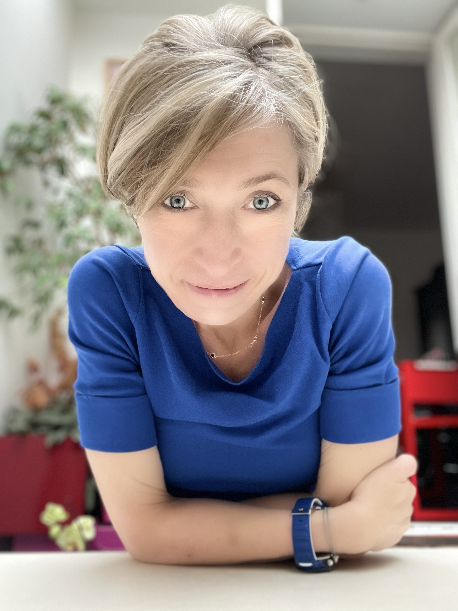

Oriana Bandiera
Sir Anthony Atkinson Professor of Economics, LSE.

About
Short bio and links.
Oriana Bandiera is the Sir Anthony Atkinson Professor of Economics at the London School of Economics. She is an honorary foreign member of the American Economic Association and a fellow of the British Academy, the Econometric Society, CEPR, BREAD and IZA. Her research studies organisations and labour markets and their interplay with economic development.
Research Interests
Development
Organizations
Labour
Public policy
Field experiments
Research
Current projects & working papers.
Poverty Traps
Meaning at Work
Beyond Bonuses: The Incentive Effect of a Prosocial Initiative on Bankers
Teaching
Current and past courses.
EC307: Development Economics
Undergraduate • LSE
FCDO/IZA Online Development Course
Open resources
Curriculum Vitae
Download full CV.